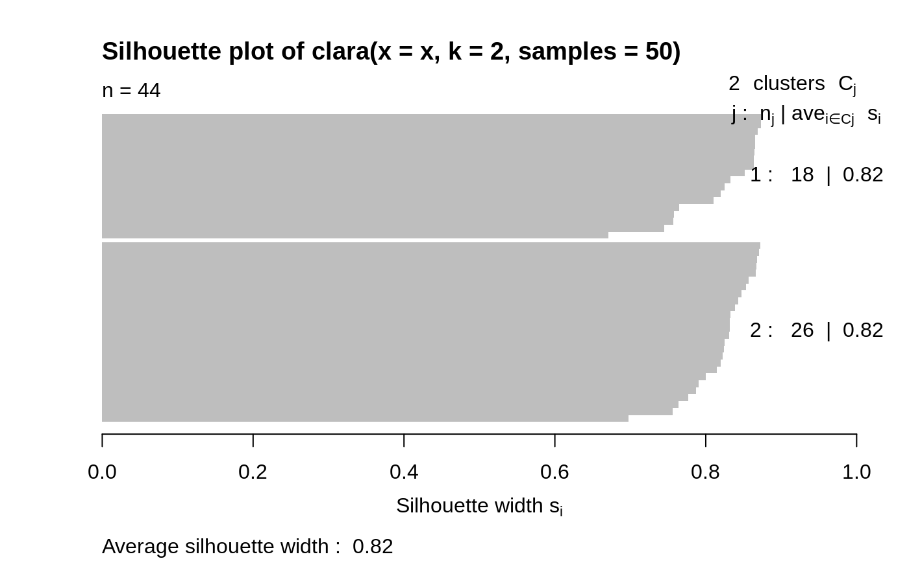

clara.RdComputes a "clara" object, a list representing a clustering of
the data into k clusters.
clara(x, k, metric = c("euclidean", "manhattan", "jaccard"), stand = FALSE, samples = 5, sampsize = min(n, 40 + 2 * k), trace = 0, medoids.x = TRUE, keep.data = medoids.x, rngR = FALSE, pamLike = FALSE, correct.d = TRUE)
| x | data matrix or data frame, each row corresponds to an observation, and each column corresponds to a variable. All variables must be numeric. Missing values (NAs) are allowed. |
|---|---|
| k | integer, the number of clusters.
It is required that \(0 < k < n\) where \(n\) is the number of
observations (i.e., n = |
| metric | character string specifying the metric to be used for calculating dissimilarities between observations. The currently available options are "euclidean", "manhattan", and "jaccard". Euclidean distances are root sum-of-squares of differences, and manhattan distances are the sum of absolute differences. |
| stand | logical, indicating if the measurements in |
| samples | integer, say \(N\), the number of samples to be drawn from the
dataset. The default, |
| sampsize | integer, say \(j\), the number of observations in each
sample. |
| trace | integer indicating a trace level for diagnostic output during the algorithm. |
| medoids.x | logical indicating if the medoids should be
returned, identically to some rows of the input data |
| keep.data | logical indicating if the (scaled if
|
| rngR | logical indicating if R's random number generator should
be used instead of the primitive clara()-builtin one. If true, this
also means that each call to |
| pamLike | logical indicating if the “swap” phase (see
|
| correct.d | logical or integer indicating that---only in the case
of Because the new correct formula is not back compatible, for the time
being, a warning is signalled in this case, unless the user explicitly
specifies |
an object of class "clara" representing the clustering. See
clara.object for details.
clara is fully described in chapter 3 of Kaufman and Rousseeuw (1990).
Compared to other partitioning methods such as pam, it can deal with
much larger datasets. Internally, this is achieved by considering
sub-datasets of fixed size (sampsize) such that the time and
storage requirements become linear in \(n\) rather than quadratic.
Each sub-dataset is partitioned into k clusters using the same
algorithm as in pam.
Once k representative objects have been selected from the
sub-dataset, each observation of the entire dataset is assigned
to the nearest medoid.
The mean (equivalent to the sum) of the dissimilarities of the observations to their closest medoid is used as a measure of the quality of the clustering. The sub-dataset for which the mean (or sum) is minimal, is retained. A further analysis is carried out on the final partition.
Each sub-dataset is forced to contain the medoids obtained from the
best sub-dataset until then. Randomly drawn observations are added to
this set until sampsize has been reached.
By default, the random sampling is implemented with a very
simple scheme (with period \(2^{16} = 65536\)) inside the Fortran
code, independently of R's random number generation, and as a matter
of fact, deterministically. Alternatively, we recommend setting
rngR = TRUE which uses R's random number generators. Then,
clara() results are made reproducible typically by using
set.seed() before calling clara.
The storage requirement of clara computation (for small
k) is about
\(O(n \times p) + O(j^2)\) where
\(j = \code{sampsize}\), and \((n,p) = \code{dim(x)}\).
The CPU computing time (again assuming small k) is about
\(O(n \times p \times j^2 \times N)\), where
\(N = \code{samples}\).
For “small” datasets, the function pam can be used
directly. What can be considered small, is really a function
of available computing power, both memory (RAM) and speed.
Originally (1990), “small” meant less than 100 observations;
in 1997, the authors said “small (say with fewer than 200
observations)”; as of 2006, you can use pam with
several thousand observations.
agnes for background and references;
clara.object, pam,
partition.object, plot.partition.
## generate 500 objects, divided into 2 clusters. x <- rbind(cbind(rnorm(200,0,8), rnorm(200,0,8)), cbind(rnorm(300,50,8), rnorm(300,50,8))) clarax <- clara(x, 2, samples=50) clarax#> Call: clara(x = x, k = 2, samples = 50) #> Medoids: #> [,1] [,2] #> [1,] 0.8963047 0.5684269 #> [2,] 49.0283936 50.0691823 #> Objective function: 10.17307 #> Clustering vector: int [1:500] 1 1 1 1 1 1 1 1 1 1 1 1 1 1 1 1 1 1 ... #> Cluster sizes: 200 300 #> Best sample: #> [1] 6 12 17 35 41 66 75 86 90 101 123 151 161 163 171 187 195 200 205 #> [20] 228 236 237 247 257 277 295 314 325 332 371 377 380 383 393 397 416 423 431 #> [39] 436 438 473 474 498 500 #> #> Available components: #> [1] "sample" "medoids" "i.med" "clustering" "objective" #> [6] "clusinfo" "diss" "call" "silinfo" "data"clarax$clusinfo#> size max_diss av_diss isolation #> [1,] 200 23.60803 10.436232 0.3419292 #> [2,] 300 25.63502 9.997636 0.3712873## using pamLike=TRUE gives the same (apart from the 'call'): all.equal(clarax[-8], clara(x, 2, samples=50, pamLike = TRUE)[-8])#> [1] TRUEplot(clarax)## 'xclara' is an artificial data set with 3 clusters of 1000 bivariate ## objects each. data(xclara) (clx3 <- clara(xclara, 3))#> Call: clara(x = xclara, k = 3) #> Medoids: #> V1 V2 #> [1,] 5.553391 13.306260 #> [2,] 43.198760 60.360720 #> [3,] 74.591890 -6.969018 #> Objective function: 13.225 #> Clustering vector: int [1:3000] 1 1 1 1 1 1 1 1 1 1 1 1 1 1 1 1 1 1 ... #> Cluster sizes: 900 1148 952 #> Best sample: #> [1] 20 30 46 91 92 169 179 187 209 223 382 450 555 971 1004 #> [16] 1025 1058 1277 1281 1302 1319 1361 1362 1513 1591 1623 1628 1729 1752 1791 #> [31] 1907 1917 1946 2064 2089 2498 2527 2537 2545 2591 2672 2722 2729 2790 2797 #> [46] 2852 #> #> Available components: #> [1] "sample" "medoids" "i.med" "clustering" "objective" #> [6] "clusinfo" "diss" "call" "silinfo" "data"## "better" number of samples cl.3 <- clara(xclara, 3, samples=100) ## but that did not change the result here: stopifnot(cl.3$clustering == clx3$clustering) ## Plot similar to Figure 5 in Struyf et al (1996) if (FALSE) plot(clx3, ask = TRUE) plot(clx3)## Try 100 times *different* random samples -- for reliability: nSim <- 100 nCl <- 3 # = no.classes set.seed(421)# (reproducibility) cl <- matrix(NA,nrow(xclara), nSim) for(i in 1:nSim) cl[,i] <- clara(xclara, nCl, medoids.x = FALSE, rngR = TRUE)$cluster tcl <- apply(cl,1, tabulate, nbins = nCl) ## those that are not always in same cluster (5 out of 3000 for this seed): (iDoubt <- which(apply(tcl,2, function(n) all(n < nSim))))#> [1] 30 243 245 309 562 610 708 727 770 1038 1081 1120 1248 1289 1430 #> [16] 1610 1644 1683 1922 2070 2380 2662 2821 2983if(length(iDoubt)) { # (not for all seeds) tabD <- tcl[,iDoubt, drop=FALSE] dimnames(tabD) <- list(cluster = paste(1:nCl), obs = format(iDoubt)) t(tabD) # how many times in which clusters }#> cluster #> obs 1 2 3 #> 30 4 96 0 #> 243 99 0 1 #> 245 91 0 9 #> 309 99 0 1 #> 562 4 0 96 #> 610 82 18 0 #> 708 87 13 0 #> 727 92 0 8 #> 770 2 1 97 #> 1038 81 19 0 #> 1081 44 56 0 #> 1120 12 88 0 #> 1248 22 78 0 #> 1289 5 95 0 #> 1430 1 99 0 #> 1610 57 43 0 #> 1644 24 76 0 #> 1683 1 99 0 #> 1922 13 87 0 #> 2070 2 0 98 #> 2380 4 0 96 #> 2662 4 0 96 #> 2821 8 0 92 #> 2983 2 0 98